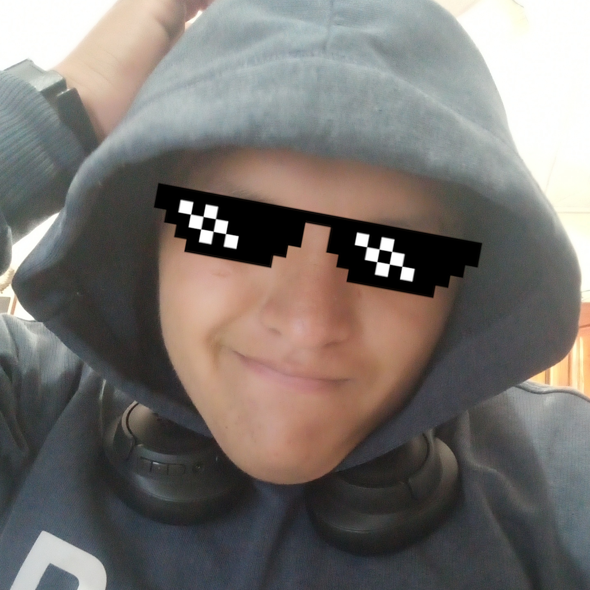

Okey actualmente, el medio ambiente esta muy mal, ya que por la situación de la cuarentena pues habido una muy grande demanda de recursos ya sean objetos hospitalarios, dispositivos electrónicos o víveres, al aver tal demanda obviamente las empresas para cumplir esta demanda deben producir más y al producir en más cantidad la contaminación es más grande.
Para poder cuidar el medio ambiente en sí es más que decir que moderarse a comprar cosas y al consumo irresponsable de las personas, ya que mientras más consumimos más les estamos exigiendo alas empresas, así que las empresas no son culpables de todo.
Lo que se puede hacer es que tú y tu familia hablen para poder ponerse de cuerdo para que puedan realizar un consumo responsable, también si comprar aparatos electrónicos hacer los durar porque se suele comprar nuevos cuando se nos rompen y también todo lo que tiene que ver con reciclar no botar basura y etc.
Estos son consejos para que formes parte de las personas que cuidan el medio
ambiente y a tierra-chan :3
Esta página es un proyecto para el colegio como producto final, fue diseñada por Thehunter101( Matias Murcia) en visual studio code y con el framework de CSS Skeleton Tambien se uso la libreia de scroll reveal. Estan son las paguinas de las cuales me guie: Documento PDF Recursos Naturales 2018 ,Consejos para cuidar el medio ambiente.
